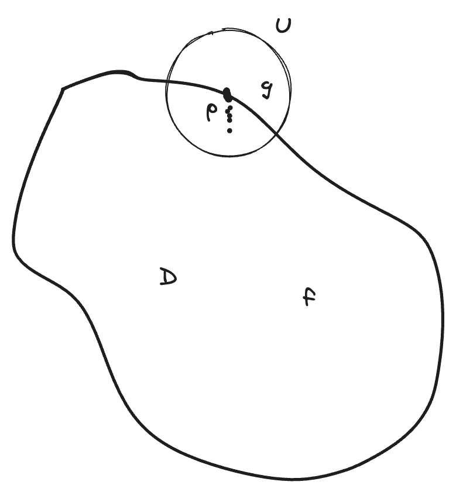

解析函數的零點
實函數的零点存在聚點（limit point）

Theo Let \(D\) be a domain in \(\mathbb{C}\).
\(f\in O(D)\), let \(Z_f=\{z\in D|f(z)=0\}\)
If \(Z_f\) has a limit point in \(D\), then \(f\equiv 0\) on \(D\) \(\blacklozenge\)
只要不恆等於0，就必須全部零點都是孤點
只要零點中存在聚點，則\(f\)恆等於0
pf. Set \(A=\{w\in D|w \text{ is a limit point of }Z_f\}\)
By assumption, \(A\neq \varnothing\). 要證明\(A=D\)：既然domain即\(D\)上全是零點的聚點，那\(D\)上當然也全是零點
The only two subsets of a connected open set that are both closed and open is \(\varnothing\) and the set itself. 參考：intro_analysis_ch1
\(A\) is closed. (obvious)
let \(p\in A\subset D\), \(f(p)=0\)
要證\(p\)是\(A\)的內點，則證得\(A\)是open的
write
\[ f(z)=\sum_{k=0}^{\infty}a_k(z-p)^k=\sum_{k=1}^{\infty}a_k(z-p)^k \]
因為\(0^0=1\)，所以\(f(p)=a_0+\sum_{k=1}^{\infty}a_k\cdot 0^k=a_0=0\)，自然想到是不是\(k\neq 0\)的係數也為0
Claim: \(a_k=0,\forall k\in \mathbb{N}\)
If not, then \(\exists a_{k_0}\neq 0\)，其中\(k_0:\) 最小的index
\[ \begin{aligned} \therefore f(z)&=a_{k_0}(z-p)^{k_0}+a_{k_0+1}(z-p)^{k_0+1}+\cdots\\ &=(z-p)^{k_0}(a_{k_0}+a_{k_0+1}(z-p)+\cdots) \end{aligned} \]
Set \(g(z)=a_{k_0}+a_{k_0+1}(z-p)+\cdots\), then \[ g(p)=a_{k_0}\neq 0 \]
在\(p\)点周圍\(f\)均不等於0，只有\(f(p)=0\)，所以\(p\)是孤點，不在\(A\)内，矛盾. \(\square\)
\(\therefore\) \(A\) is open \(\Rightarrow A=D\) \(\blacksquare\)
Def. Let \(D\) be a domain in \(\mathbb{C}\), \(E\subset D\), we say \(E\) is a set of uniqueness if, for \(f\in O(D)\), \([f(z)=0, z\in E]\) implies \([f(z)\equiv 0, \forall z\in D]\)
\[ \forall z\in E\xrightarrow{f(z)=0}E\xrightarrow{\forall z\in D}f(z)\equiv 0 \]
Any point sequence with an accumulation point in \(D\) is a set of uniqueness 聚點必須在domain裡，不能往邊界上走
Any open subset of \(D\) is a set of uniqueness
Theo (identity theorem) 恆等定理
Let \(f,g\in O(D)\), If \(f=g\) on open subset of \(D\), then \(f\equiv g\) on \(D\)
pf. 考慮\(h=f-g\)即可，\(h\)也是解析函數
反問題
Theo (Weierstrass)
Let \(D\) be a domain in \(\mathbb{C}\), let \(\{z_k\}\) be a sequence with no limit point in \(D\), for each \(k\) associate \(z_k\) with a positive integer \(m(k)\)
Then there exists a \(f\in O(D)\) such that the zeros of \(f\) are exactly \(z_k\)'s with multiplicity \(m(k)\) at \(z_k\) \(\blacklozenge\)
證明太複雜，不涉及
\(f\)不唯一，sequence沒有聚點不是set of uniqueness
由上面的定理：有一個domain，都能找到一個解析函數，不能從domain中延拓出去
Theo Let D be a domain in C, then there exists a \(f\in O(D)\), such that \(f\) cannot be holomorphically extended across any boundary point. （但這個定理在多複變是錯的）\(\blacklozenge\)
pf. 思路：找任意的\(f\in O(D)\)假設它們都可以延拓，推出矛盾
choose a seq of points \(\{z_k\}\) with no limit in \(D\), such that every boundary point is a limit point of this sequence
照這樣分下去到\(1-\frac 1k\)，最後無數的點會全堆在邊界
由Weierstrass
\[ \exists f\in O(D), \ s.t.\\ Z_f=\{z_k\}_{k=1}^{\infty},\quad m(k)=1 \]
如果能延拓出去，會發現矛盾

\[ g\in O(D),\quad f\in O(D) \]
\(g=f\) on \(D\cap U\)
因為\(f(z_k)=0\)，所以在這些點上\(g(z_k)=0\)
\[ \therefore g(p)=0\quad p\text{\ in an interior point} \]
注意到 \(p\) 是 \(U\) 的內點（不是\(D\)的內點），歐式空間中內點一定是聚點
內點：\(\exists \delta_0>0, s.t.\ U(p,\delta_0)\subset U\)，
聚點：\(\forall \delta>0, \exists s\in \mathring{U}(p,\delta),且 s\in U\)
考慮\(\forall \delta\).
- \(\delta<\delta_0\): \(\mathring{U}(p,\delta)\subset U(p,\delta)\subset U(p,\delta_0)\subset U\)，所以\(p\)的去心鄰域內有屬於\(U\)的點
- \(\delta >\delta_0\): 顯然\(\mathring{U}(p,\delta)\)內存在點屬於\(U\)
所以：內點一定是聚點，聚點不一定是內點（聚點也可以是邊界點）
這個條件會強迫
\(\Rightarrow g\equiv 0\) on \(U\) （set of uniqueness）
\(\Rightarrow f\equiv 0\) on \(U\cap D\)
因為 \(0\) 本身也是解析函數，所以現在 \(D\) 上有兩個解析函數：\(f\)和\(0\)
\(U\cap D\) 是 \(D\) 的open subset，由恆等定理，
\(f\equiv 0\) on \(D\)
可是原來的\(f\in O(D)\)是任意的，不恆等於0，矛盾. \(\blacksquare\)
多複變中，這種domain叫domain of holomorphy